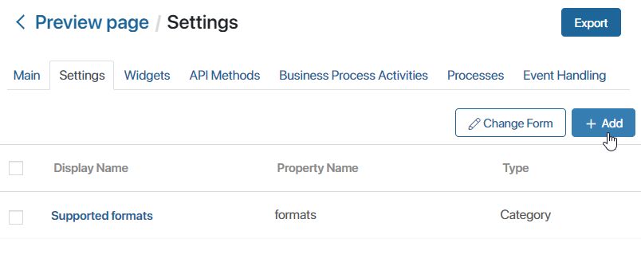
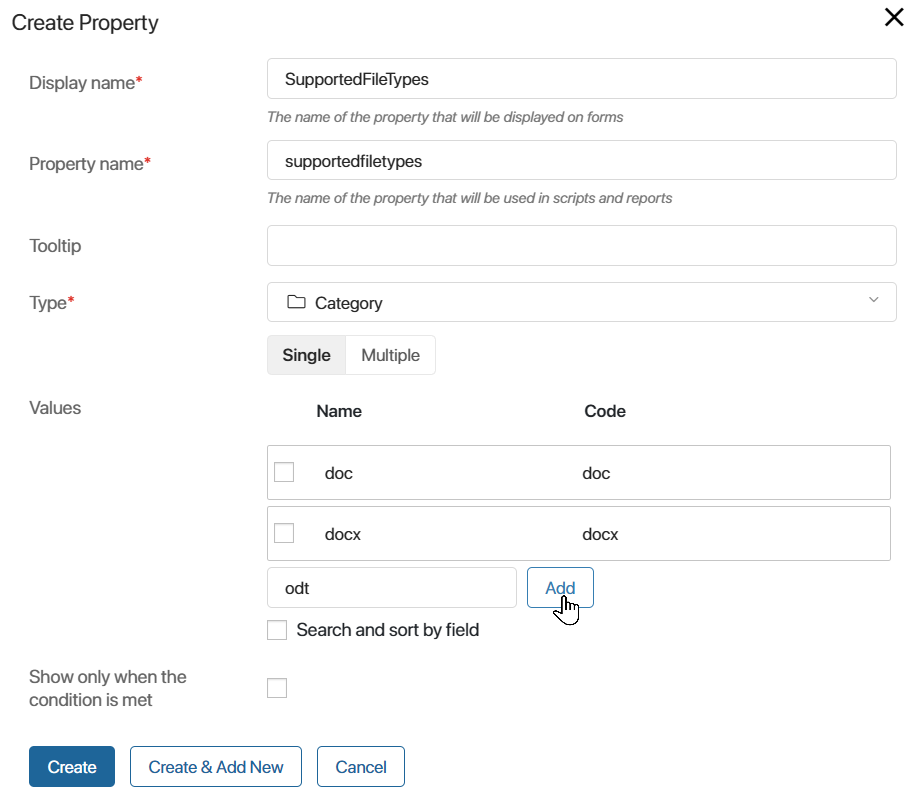
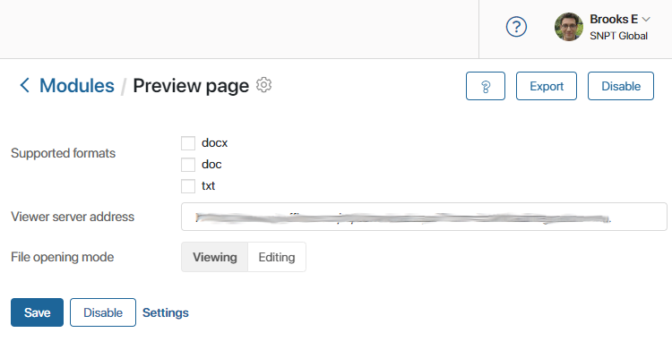
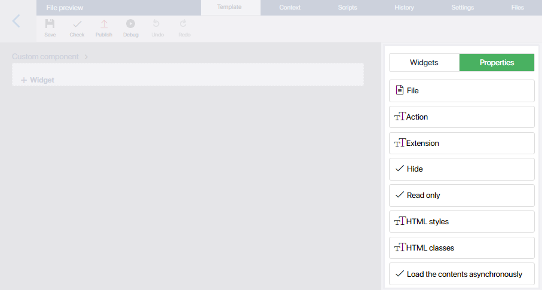
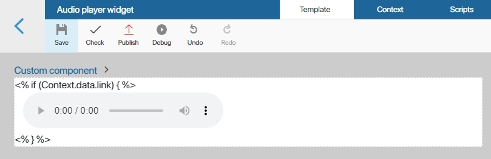

You can use BRIX extension modules to view and edit files in formats that aren’t supported in the system by default.
For example, you may want to make an order page that includes not only text descriptions but also equipment installation drawings in the .djvu format. By default, you cannot view files in this format in the system, but you can create a custom module that allows you to do it.
начало внимание
Only users included in the Administrators group can create and configure modules.
конец внимание
Architecture
The module consists of the following essential parts: configuration properties, the Preview page widget, and API methods.
Configuration properties determine a module’s overall behavior. These can be, for example, the supported file formats, the viewer server address, the interface language, etc.
The viewing and editing logic is determined in the Preview page type widget using client and server scripts.
If an integration with an external application is set up within the module, API methods enable data exchange.
Create and configure the module
To create a new module, go to Administration > Modules and click +Module. In the window that opens, select Create. Enter information about the module and click the Create button. Read more in Create a custom module.
Add configuration parameters
On the Settings tab, you can create, edit, and delete the general parameters of the module which are filled in when it is enabled.
These parameters are global: they apply to all files in the system that are viewed or edited using the module.
To create a parameter, go to the Settings tab and click the +Add button.

In the opened window, fill in the fields and click the Create button.
For a file viewing and editing module, a mandatory parameter is SupportedFileTypes. It stores the supported file formats. Use the following settings for the property:

- Display Name*. Specify the name of the field that will appear on the module connection page. It can be any name, for example, Supported formats.
- Property Name*. Specify the value
SupportedFileTypes. This property name is mandatory. It is used to search for modules that can open files with a specific extension. - Type*. Select Category. To enable the module to support multiple file extensions, choose the Multiple type.
- Values. Add file formats that will be opened using the module, for example, .doc, .docx, and .odt.
You can also add fields for switching the file opening mode, specifying the address of an external server, etc.
All added properties are displayed on the module connection page in the Administration workspace.

If needed, you can change the standard form used to present the module settings, hide some fields. To do that, on the Settings tab, click the Change Form button. The interface designer will open. There you can set up the module connection page. Read more in Module settings.
API methods
On the API Methods tab, add methods for data exchange with the external server. If data exchange is not required for the module you create, you don’t need to add methods.
For example, you can create a callback POST request that will obtain the current status of the document from the server and add a new version to BRIX whenever it’s edited. The source code of the method can be found in the Example of an integration with an external file viewing and editing service section.
Viewing and editing widget
The Preview page type widget is the module’s main component. It provides data exchange between BRIX and the external application used for viewing documents. To create the widget, do the following:
- In the module settings, go to the Widgets tab.
- Click the +Widget button.
- In the opened window, specify the widget parameters:
- Name*. Enter the widget’s name.
- Widget code*. Set the widget’s ID.
- Extension. Select File preview > Preview page.

- Click Save.
The interface designer will open. Here you can set up the widget content.
By default, the widget context includes the following properties:
- File. A Files type property. A document opened by the viewing and editing module.
- ForFile. A Files type property. It is used when saving the result of comparing a document from the File field with another version of it or a different file. It is applied, for example, if the document is not yet saved in the system or a version needs to be added to another file. The property contains the document for which a version with the comparison result is created.
- Action. A String type property. The mode in which the document opens: for viewing only or for view and editing. The possible values are view and edit.
- Extension. A String type property. The extension of the document in the File property.
You can find these properties on the right-side panel of the interface designer, on the Properties tab.

Let’s consider an example of how a widget context can be used. You can create a method that checks whether the file preview module supports documents of a certain type. First, let’s get the file’s extension from the Extension context variable of the widget:
function getFileExtension() {
if (Context.data.extension){
return (Context.data.extension[0]);
}
else {
return "";
}
}
If the format is supported, the method will return true, otherwise false. In the following example, only .xlsx files are supported:
async function canRender() {
let fileType:string = getFileExtension();
if (fileType == "xlsx")
{
return true;
}
else
{
return false;
}
}
Note: To obtain document data, use the server scripts of the viewing and editing widget. The use of client scripts is not recommended, as the user may not have sufficient permissions to work with the app item or file.
Example of a viewing module without integration with an external service
Let’s consider an example of creating a module for playing .mp3 files in BRIX. We’ll use standard HTML elements without integration with an external service.
To create the module:
- Go to Administration > Modules. In the upper right corner of the page, click +Module and select Create. Specify the module’s name and description.
- Go to the Settings tab and add the mandatory property for specifying the file format. Specify an arbitrary display name. Use the
SupportedFileTypesas the property name, select the Category > Single type, and add the mp3 value.
- Create a widget that will play .mp3 files. To do that, on the Widgets tab, click +Widget. Enter any name and code for the widget, for example,
mp3 preview. In the Extension field, select File preview > Preview page. Click Save. - In the interface designer, go to the Context tab.
- Create a variable that will store a link to the file that needs to be opened. To do that, click +Add and set the following parameters:
- Display Name*. Enter File link.
- Property Name*. Enter
link. - Type*. Select String.
- Go to the Template tab. Add the Code widget to the modeling canvas. In the window that opens, paste the following:
<% if (Context.data.link) { %>
<audio controls>
<source src="<%= Context.data.link%>" type="audio/mp3">
your browser does not support the audio element. Try downloading the file
<a href="<%= Context.data.link%>" download>here</a>.
</audio>
<% } %>
In this code, standard HTML elements are used to create a player for the audio file. The file source is the link specified in step 5.
When you save the script, the player will appear on the modeling canvas:

- Go to the Scripts tab. In the upper right corner, click Client. Add a script that will initialize the widget:
/** Event that occurs upon widget initialization */
async function onInit() {
// Get the file download URL from the `file` context variable
const file_link = await Context.data.file?.getDownloadUrl();
// If no file is found, quit
if (!file_link) {
return;
}
// Assign the `link` context variable to the file download URL
Context.data.link = file_link;
}
- In the upper left corner, click Save. Then click Check to make sure the widget doesn’t have errors. Then click Publish.
When this module is enabled, you can play .mp3 files in the BRIX interface when you add them to Files type fields on app item pages.
Example of an integration with an external file viewing and editing service
Let’s see how to integrate a viewing and editing module with an external application using OnlyOffice as an example. In this integration, we are going to use JavaScript to send documents and parameters to an external service, receive the result, and display it in BRIX.
To create the module, do the following:
- Go to Administration > Modules. In the upper right corner, click +Module, then click Create. Specify the module’s name and brief description.
- Go to the Settings tab and add a mandatory property to specify the file format. Specify an arbitrary display name. Use the
SupportedFileTypesvalue as the property name, select the Category > Multiple type, and in the Values field add the formats supported by the module: .doc, .docx, .odt, .txt, .xls, .xlsx, .ods, .csv, .ppt, .pptx, .odp.
- In the same way, create two properties that will be used to connect to the external file viewer server. Set the following parameters:
- Display Name*. Enter the property names: BRIX server address and OnlyOffice server address.
- Property Name*. Enter the property unique code names:
brixServerAddressandonlyOfficeServerAddress. - Type*. Select String for both properties.
- Create a widget that will open files of the specified formats. To do that, on the Widgets tab, click +Widget. Enter any Name* and Widget code*, for example, doc preview. In the Extension field, select File preview > Preview page.
- In the interface designer, go to the Context tab.
- Create a context variable that will be used to pass parameters from the server to the client side. To do that, click +Add and set the following values:
- Display Name*. Enter Additional parameters.
- Property Name*. Enter
ExtensionParameters. - Type*. Select String.
- Go to the Template tab. Add the Code widget to the modeling canvas. In the window that opens, enter the following:
<div style="height: 100%;width: 100%;display: flex;"> |
- The code above contains functions that need to be described on the Scripts tab in the interface designer. Switch to this tab. In the upper right corner, click Client. Add the following:
/* window webAPI */ |
- On the Scripts tab, click Server in the upper right corner. Enter the following:
/* Server scripts module */ |
- In the upper left corner, in the toolbar, click Save. Then click Check to make sure there are no errors in the widget. Finally, click Publish.
- Close the interface designer. In module settings, switch to the API Methods tab. Create a new method. Add the following script to it:
async function callback(req: FetchRequest): Promise<HttpResponse | void> { |
After that, when the module is enabled, you will be able to view files with formats specified in its settings directly in the BRIX interface.
Found a typo? Select it and press Ctrl+Enter to send us feedback